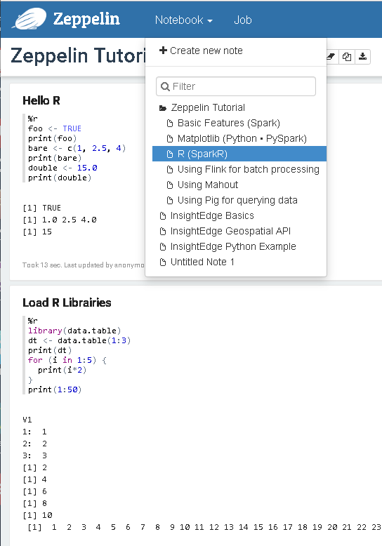

In addition to native support for Apache Zeppelin, which is used primarily by Python and Scala developers, the R programming language can be used for statistical computing with InsightEdge. R provides a wide variety of statistical and graphical techniques to apply on the objects in the InsightEdge data grid.
This topic describes how to run R with
R must be installed, along with any of its packages required for your purpose. To install R in Linux run the following command:
api-get install r-base
Don't have a reference to use instead of command. Windows equivalent not clear and would require some trials
You can run R commands on the data grid from the

is this how the notebook looks right after it's downloaded (regarding the examples)?
Before running the example below, install these 2 R packages with the following commands:
sudo R -e "install.packages('knitr', repos = 'http://cran.us.r-project.org’)"
sudo R -e "install.packages('data.table', type = 'source',repos =
'http://Rdatatable.github.io/data.table’)"
To read your data from the grid and write data back to the grid, create a new note with R commands similar to this sample:
%r
//Reading salaries from the grid
df <- read.df("salaries", "org.apache.spark.sql.insightedge", header = "false",
inferSchema = "true", na.strings = "NA")
//Writing back as people to the grid
write.df(df, path = "people", source = "org.apache.spark.sql.insightedge", mode = "overwrite")